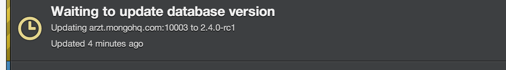
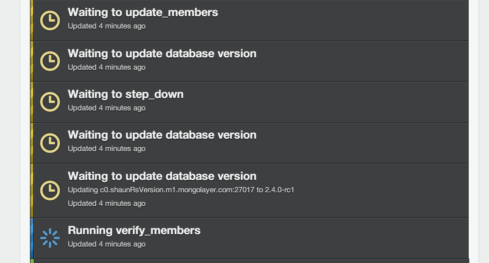

MongoDB 2.4 and the New Version Selector
Today, 10gen announced the final production release of MongoDB 2.4. As we have talked about in previous blog posts, this release includes a number of great new features, including: full-text search (beta), a new javascript engine, better performance on counts, hashed shard keys, and atomic fixed-length arrays. There are a number of smaller fixes and improvements as well … a really solid release.
Along with this, at MongoHQ we are rolling out a new feature that allows you to choose the version of MongoDB you use, simply by selecting a dropdown in the MongoHQ web interface.
This is how it works:
- Log into MongoHQ
- Click the “Change Version” button.
{kind=link}
That’s it. Now, the magic happens. Ok, just kidding … but clicking the “Change Version” button will initiate a job to change the version of your MongoDB database. This is what happens:
Upgrading Standalone/Single instances
For people using our shared single/standalone MongoDB instances, the update process is simple. Once initiated, we will update the version of MongoDB and perform a brief restart of your database. It should take, at most, 5-10 seconds to complete. From there, you can resume normal database operations.

Upgrading Replica Sets
Upgrading replica sets are a bit different, so the system will perform what we call a “rolling upgrade”. This allows you to migrate to a different version of MongoDB with little to no downtime.
The rolling update will first update all the secondary members and arbiters of the cluster one-by-one, changing the version, restarting and safely bringing the secondary processes back online. After all of this has happened and has verified successful, the system will trigger a state change of your primary to secondary and will allow MongoDB to promote a new primary.
Once the new primary has taken over in the cluster, the system will upgrade the old primary (now secondary) to the version of MongoDB you selected. That will complete the upgrade process.
Please Note: For replica sets, ensure that your driver is properly configured to handle MongoDB replica set state changes, otherwise you may have to restart your application. If you have questions about this, we can help! Just send us a note at: support@mongohq.com.
Supporting our Providers
Of course, if you are running MongoDB with MongoHQ on our providers, like: Heroku, CloudBees, AppFog, AppHarbor, Engine Yard, Nodejitsu and others, you can use this same version selecting functionality to run MongoDB 2.4 as well.
MongoDB Full-Text Search
Since full-text search is considered beta for the 2.4 release of MongoDB, we do not enable it by default when you upgrade to MongoDB 2.4. If you would like to try it on larger data sets, please contact us at: support@mongohq.com and we will work with you to make this happen.
We hope you enjoy this great new feature and that it gives you the flexibilty and control to manage the versions and features of MongoDB that you need to use.